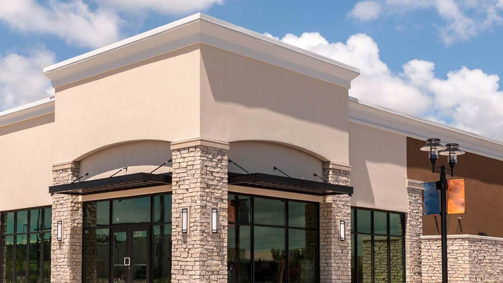
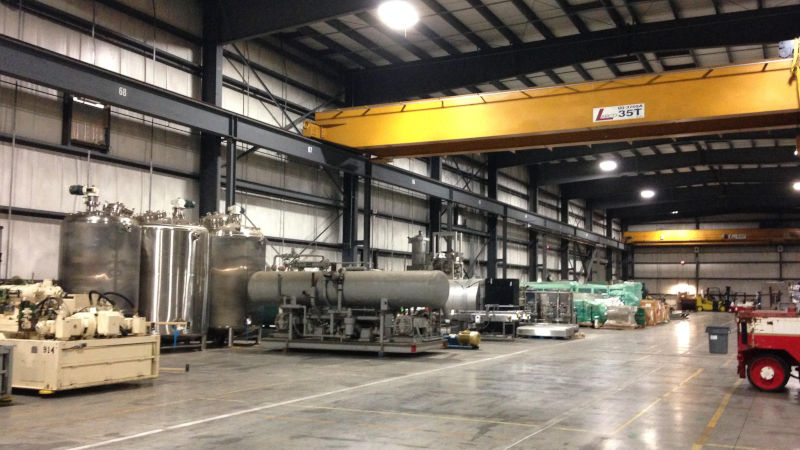
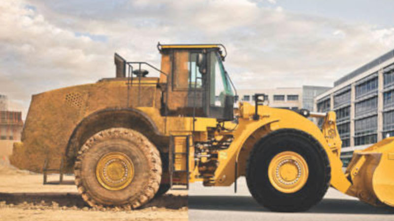
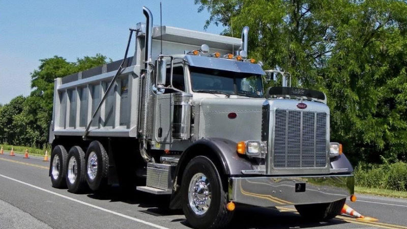

Who We Are
We are a leader in the pressure washing industry. We are located in Adairsville Georgia. We believe in excellent work, and we are looking to establish new customer relationships through our work.
We are a leader in the pressure washing industry. We are located in Adairsville Georgia. We believe in excellent work, and we are looking to establish new customer relationships through our work.
We wash and clean anything with pressure washing machines. We also use soaps and chemicals to properly wash and clean. The system we use is typically a low pressure wash that follows a proper application of soaps or chemicals. A high pressure wash is usually used for hard surfaces such as concrete, or it is used to remove mud build up as well as grease and oil.
It is important that a house is washed at least one to two times a year. It gives your house a nice appeal with a safe protection against mold or mildew on the outside of your house. Neglect of washing can result not only in a bad appearance, but also intrusion of mold or mildew into the house.
 A routine wash will extend the life of your commercial property. It keeps the appeal of your business nice and fresh. Includes retail, restaurants, banks, office space, and much more.
 A routine wash of industrial equipment is a preventative maintenance that will prevent machines or equipment from breaking down. Machines can break down due to debris build up on the machine. Debris can work it's way inside the machine through valves or hydraulics. A routine wash will prevent this from happening. Includes industrial warehousing, machines & equipment.
 It is necessary to have heavy equipment washed routinely. Keeping your heavy equipment clean makes it easier to operate and transport. Includes excavators, bulldozers, earth movers, tractors, and much more.
 A routine wash will keep your transportation looking great while protecting the paint on the body. Will prevent break downs by eliminating debris build up. Includes dump trucks, tractor trailers, buses and more.